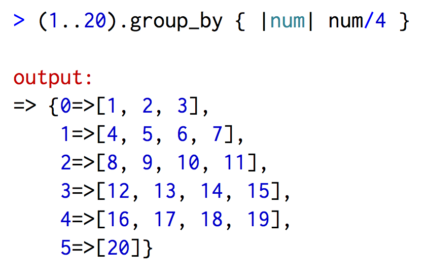
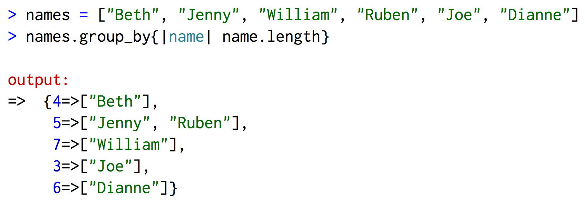
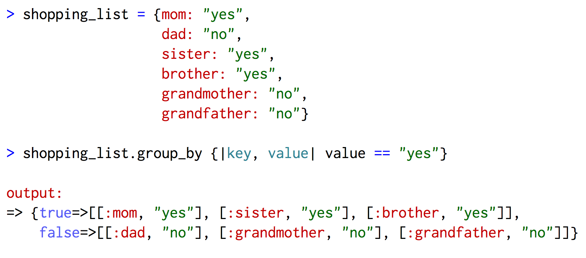

Ruby's Enumerable Methods
Sunday, November 22, 2015
What is an enumerable?
In Ruby, you can iterate through each element in a class like the array, hash, set, and range collection classes using the "each" method. These classes have defined the "each" method, so they can mixin the "Enumerable" module. Methods in the "Enumerable" module allow you to iterate through the elements in a collection and do something to each element in the collection. If there is an enumerable method that does something specifically you want to do to each element then you don't need to use the #each method to get access to each element in a collection.
What are some enumerable methods?
- #each_slice: iterates through n elements in a collection
- #map: modifies each element according to a block's conditions and returns a new array with the modified elements
- #find_all: returns an array containing all the elements that returned a true value from the conditions in a block
- #group_by: takes a block and returns a hash that groups all the different types of returns from the block
How can I use the #group_by method?
The #group_by method seems to be a pretty handy and awesome method, so here are some ways to use the method.
#group_by with a Range
Let's say you wanted to know how many times each number in a range from 1 to 20 was divisible by 4. After running the #group_by method on the range it will return a hash with the keys 0, 1, 2, 3, 4, and 5. The values for each key in the hash will be an array of values that returned 0, 1, 2, 3, 4, or 5 when divided by 4.
#group_by with an Array
If you had an array listing the names of people you could group the names by the length of the string.
#group_by with a Hash
Since the holidays are just around the corner, maybe you've used a hash to list of all the people you need to buy a gift for and whether you've done so. You could use the #group_by method to help shorten your list to just the people you haven't purchased a gift for.
